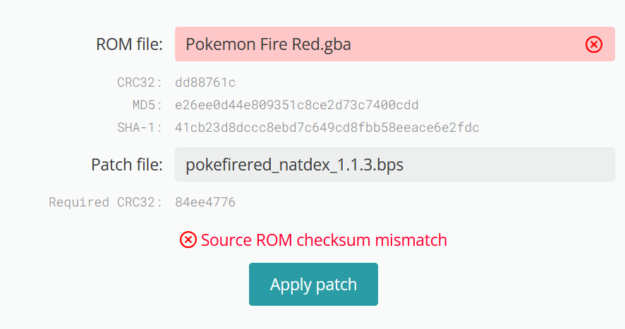

Roguemon was created by Crozwords
You can join the Discord Here!
RogueMON combines elements of Roguelikes, Ironmon Game Modes, and Randomized Challenges.
The goal is to win by locking every pokemon type and finishing a run without fainting. on your journey, you'll receive prizes to help you on your way. Curses will hinder your path. All resources to get set up available in the discord listed above.
Often have difficult choices and a “linear” element.
The goal is to go straight through the game and as you do, you get offered random sets of items for achieving milestones.
There are randomly 'cursed' sections of the game which offer fun and interesting challenges to overcome.
There are ‘buy’ phases and ‘cleansing’ phases (described in rules) where you can exchange current items to upgrade them and/or win items to use on your quest for victory.
There will also be ‘ascensions’ or difficulty levels to progress through.
Roguelikes and Ironmon both have a “permadeath” feature.
The goal of the challenge is to complete the entirety of the game without your lead pokemon fainting by only fighting trainers. All stats, abilities, items, moves (learnable via level and TMs) are randomized.
Unlike Ironmon, evolutions in RogueMON will SHARE BST distribution AND ability. Any additional BST from the evolution will be randomly distributed ON TOP of the previous mons.
Example: Charmander evolves into Combusken. The SPD gets a slight buff from the additional base stats where the DEF got nothing. Both have Mold Breaker.
All pokemon available in the game will be able to evolve at least once. Evolutions are randomized, but with some logic:
The evolution will share a type with the previous form, and will be of approximately similar BST to what it is “supposed” to become (usually within +/-10%).
No cancelling evolutions. Everstones are allowed if desired, if acquired by a prize. Roguestone use is a choice.
Base stats and ability upon evolving are carried over to the new pokemon, with the additional base stats randomly going on top.
In FRLG Natdex, all pokemon with a BST less than or equal to 450 that normally would not evolve are given a new evolution, in order to ensure that you can end up with something reasonably strong. This evolution will occur at the level of the BST of the evolution target divided by 10. Note, this will not be known until it is hit!
Example: If Wobbuffet (405 BST) were to evolve into Delphox (534 BST), this evolution would occur at level 53.
Ascension 1 is closer to "Ultimate IronMon".
Ascension 2, and Kaizo IronMon are similar difficulty, but you're also likely to win in less 'attempts'.
Ascension 3 hasn't had much testing, and is still in development, with that said it will likely fall between Kaizo IronMon and Super Kaizo IronMon.
Q : In A1 when can you equip the lucky egg?
A : You can equip it as soon as you get it, but after you beat Brock it's gotta go.
Q : I'm struggling with getting RogueMon running
A : The discord is currently the best place to get any help, it has many resources and you are free to ask questions
Q : Where is the Move Re-learner?
A : It's in Celadon City, in the house next to the Pokemon Center. This can not be pre-scouted
Q : What does evolution "BST/10" mean?
A : The bst of whatever you evo into /10. So if you are a Minior that evos into a galarian articuno(580bst). Your Minior will evo at level 58 for 580/10.
Q : How do I move to Ascension 2 attempts?
A : Make new profiles with the AS2 rnqs files, then in the tracker go to the RogueMon extension go into options and tick 5 Curses
Q : How do I start new games directly in the lab?
A : Go to the lab or where you want to save, save using the in-game menus, then flush the SaveRAM (Bizhawk > File > SaveRAM > Flush).
In the tracker, you need to toggle to display HP heals in bag as a whole number and not a percentage. (Settings>Gameplay>Options)
In the Discord there are extended guides with full details and pictures of each route
Lab mons are guaranteed to be base form evolutions and will evolve at least once.
You can choose your starter in the lab.
You will always start each run with 5 Potions. You receive 4 AUTOMATICALLY if you are using the Roguemon Tracker extension. Get the 5th from the Mart employee on Route 1.
Wild pokemon will be any un-evolved pokemon that can evolve by level, friendship, or a game mode exclusive "Roguestone". Type can be specified in the Roguemon-randomizer.
Pokemon in the wild have a 100% catch rate.
Wild Pokemon have a 50% increase to their level in all ascensions.
Once you fight a non-rival trainer, you are LOCKED with your current pokemon for the attempt.
You may catch 5 pokemon, and then choose ONE to attempt the challenge, including the same pokemon 5 times if you choose.
Once you select the ONE pokemon you are going to run, you may keep the item it’s holding if it has one, treating it as though you picked it up from the ground.
You may heal freely while you are catching your 5 pokemon. However, if your lead pokemon faints your run ends.
You may swap your lead pokemon at any time during this phase. You may use moves on wild pokemon, but you can’t intentionally faint them. If you do happen to defeat a wild, you cannot run the pokemon that gained experience.
If you are trapped and cannot escape, you can catch the pokemon that trapped you, but it counts as one of your 5 catches.If you are trapped before obtaining balls, you may KO the pokemon in good faith and continue.
After locking your pokemon to run, you can catch and release any wild pokemon you wish later on in the run.
All pokemon that evolve with any stone/item now take a "Roguestone" to evolve. Roguestones you find randomly can be kept and used at any time after gym 1.
Shiny Rule - If you are scouting your mon to run, and find a shiny, you must attempt to run it or face the wrath of Croz.
Passive Healing moves or HP manipulation moves are banned.
Passive Healing Items are also banned. I.e.
Pain Split, Leech Seed, Leftovers, Black Sludge+Poison Type, Rain Dance+Rain Dish, etc.
Damaging healing moves and items are allowed. i.e.
Draining Kiss/Giga Drain or Shell Bell (Some limitations based on Ascension Difficulty).
You cannot gain any advantage from encountering wild pokemon. For instance, Sketch is allowed but you cannot use Sketch on wild pokemon, and Poison Heal is allowed but you cannot deliberately get poisoned by a wild pokemon.
Huge Power/Pure Power is banned in AS2 and AS3.
Compound Eyes + Sleep moves are banned in AS2 and AS3. Spore always banned.
Any move/ability combo that guarantees OHKO is banned.
There will be a base bag space cap for HP heals and Status Heals during the run. It can increase with prizes after beating Milestones.
Caps are tracked automatically in the Roguemon Tracker Extension. Please change to reflect heals as whole number (Settings>Gameplay>Options).
Caps do not apply until you have locked in your pokemon to run.
0 badges = HP = 150, Status = 3
1 badge = HP = 200, Status = 5
2 badges = HP = 300, Status = 5
3 badges = HP = 350, Status = 6
4 badges = HP = 450, Status = 6
5 badges = HP = 500, Status = 6
6 badges = HP = 550, Status = 7
7 badges = HP = 600, Status = 7
8 badges = HP = 700, Status = 7
They will have pokemon that progressively scale in power.
Perish Song is completely removed from trainers!
Before level 30 - all pokemon will not be fully evolved
Before level 20 - all pokemon must be able to evolve again, and are less than 500BST.
Between level 20 and level 29 - all pokemon will be at least 320 BST.
After level 30 - all pokemon will be fully evolved but less than 570BST
Before level 40 - all pokemon will not be legendary/mythic/mega/etc.
Boss trainers’ aces will have randomized sensible items. In Ascension 3, all trainers Pokemon will have randomized sensible items.
All ground items are randomized. There are limitations to how they are used limited to immediate pickup Shop Phase and Cleansing Phase rules (see below)
Legal items are limited to visible, hidden, and NPC gift.
ALL step items are banned.
No buying items in shops unless allowed from a prize. Repels only exception. NO POKEBALLS!
No breaking and entering. You are not permitted to enter buildings not required by story / roguemon prize to pick up items.
Some prizes may also allow you to buy things such as TMs that are not automatically handled by the tracker extension.
All TMs have full compatibility
Gym TMs can be taught without restriction, but you must decide to teach immediately.
Ground TMs can only be taught if a prize roll allows you to.
There are four types of items, each with different rules:
Healing items - items that heal you but cannot be held (e.g. Potion, Antidote, Ether)
Medicine - items that power up a pokemon outside of battle (e.g. Rare Candy, PP Up, Calcium)
Consumables - items that are held and used up in battle (e.g. Oran Berry, White Herb)
Other items - battle items (e.g. X Speed), plus non-consumable held items (e.g. Charcoal, Scope Lens)
You may keep it. HOWEVER, if it puts you over your current HP or status cap, you must immediately use or trash healing items (or equip berries) until you are below the HP Cap.
In the tracker, you need to toggle to display HP heals in bag as a whole number and not a percentage. (Settings>Gameplay>Options)
You may use the item you just picked up, or an item you already had, as long as you end up back under the limit.
All heals that exceed your max HP, are EQUAL to your Pokemon’s current HP.
Status healing berries (e.g. Pecha, Cheri) are counted in this category, NOT as consumables.
It must be used immediately or trashed. This includes PP Ups/Maxes, Rare Candies, and Vitamins.
Exception: If you get one of these items before the first trainer, you may keep it until you have locked in your pokemon. If you do, it must be used or trashed immediately after deciding and before fighting the first trainer.
When you pick up any non-PP or status consumable item, you must make an immediate decision on whether to equip (or use) it or not. If you do not equip it, you must trash it. The consumable can never go back into the bag once equipped but can be used if unequipped.
Leppa Berries and status berries (e.g. Lum, Chesto) can be kept and treated as a regular PP/status heal.
You may choose to equip status/pp berries; if you do, then they are treated like normal consumables.
If the consumable replaces another consumable, the one being unequipped must be trashed/used.
If the consumable is replacing a won held item, the held item goes into the bag and can be re-equipped.
Held berries do not count against your HP/status bag limit, but berries in your bag do.
Between Gyms, Items you pick up can be KEPT, temporarily – but they can’t be used yet. It’s possible you can Win/Choose to keep them via a Prize. If you don’t Win/Choose them from a prize, they will get trashed in the next Cleansing Phase.
Think of your bag as a temporary holding space for some possible items you can win when you get a prize.
Exception - Pre-Gym 1 held item. Until you have cleared the first gym, you may use any non banned held items OR any found battle items you pick up, with no restrictions. These items must all be trashed during the cleansing phase after completing Gym 1.
Revive note: Revives are treated as being in the other items category. You may only use one if you unlock from a prize roll. If you obtain a legal Revive, this is how to use it upon fainting: send your HM friend in, use the revive, then use moves with the HM friend until it faints. As such, your HM friend should always be with you if you have one. If a trainer swaps your HM friend in, you may attack with moves until it faints, but this will forfeit your ability to use a revive until you can use a Pokemon Center. You are limited to ONE HM friend, and owning ONE revive item per run.
Buy Phase you may exchange your current HP heals for HP heals of EQUAL TO or LESS THAN the healing existing in your bag.
Max Potions and Full Restores cannot be exchanged.
You may exchange your current status heals 1 for 1.
You may also exchange any 3 status heals for a Full Heal or vice versa.
You must purge items from all pockets in your game that were found on the ground since the last gym. Unless, you are permitted to keep them via Prize.
Any item you have claimed from a prize is owned, and not cleansed.
Items below are exempt from cleanse
Repels | Pokeballs | Heals | Roguestones | Poke Dolls | Smoke Balls | Fluffy Tails
Anything you earned from the Shop phase
The game mode is meant to be linear. There is FORCED ROUTING.
The game is divided into segments, which comprise one or more routes/areas.
Unless forced to by story, you must clear a segment in one attempt without healing at a Pokemon Center.
You may use the Pokemon Center upon completing any segment.
Healing HP, Status, and PP using items is allowed outside of battle.
You may leave to use the PC (as long as you have defeated all mandatory trainers), but you may not return to fight the trainers for experience.
All items hidden and visible must be picked up before leaving a Segment, or else they are forfeited.
Any picked up item must be followed by an immediate decision if required.
Wild pokemon may not be fought for experience unless allowed by a Prize.
There is NO step farming allowed. This is applicable to moves like “Return”, or Friendship Evolution Pokemon. Also note: step items are disallowed in Roguemon.
Every trainer must be fought in the gym.
The Gym Leader’s ace will always be holding a sensible item.
Gym Leader TM must be decided to teach at time of acquisition.
Upon Beating the Gym, Immediately Get your TM, Badge Cap Increases, then a random Prize choice. Afterwards comes Buy Phase and Cleansing phase.
Curses are a feature, in a state of continuous development. Segments will be randomly chosen at the beginning of the run to be cursed. You will be able to see which segments are cursed, but not know the specific curse until you start the segment. These curses will have a temporary negative effect that applies during the segment, although some may have permanent consequences.
PLEASE NOTE THESE ARE HANDLED FULLY IN THE TRACKER VIA ROGUEMON EXTENSION
Extension found within the Roguemon Discord
Roll upon exiting the lab 3 prizes, keep 1
Roll After Gym 1: Brock, 3 prizes, keep 1
Mt. Moon Full Clear Prize, Roll After Mt. Moon, 3 prizes, keep 1
Roll After Gym 2: Misty, 3 prizes, keep 1
Roll after Gym 3: Lt. Surge, 3 prizes, keep 1
Roll after Gym 4 Erika, 3 prizes, keep 1
Roll after the Gyms, 3 prizes, keep 1
3 prizes, keep 1
Ascensions are a mechanic of this game mode which represents the difficulty level, each increase ups the challenge. The aim is to beat the game with all Pokémon types then move up to the next ascension tier where the difficulty increases.
| Feature | Ascension One (A1) | Ascension Two (A2) | Ascension Three (A3) |
|---|---|---|---|
| Trainer Level Increase | +20% | +40% | +50%, with held items |
| Healing Rules | One-time use per segment at player’s choice | Disabled unless stated/forced | Disabled unless stated/forced |
| Huge/Pure Power | Allowed | Banned | Banned |
| Shell Bell Restrictions | Allowed | Banned if BST ≥ 500, no Shell Bell + draining moves | Same as A2 |
| Cursed Segments | 3 random segments | 5 random segments | 5 segments + 2 gyms |
| Compound Eyes + Sleep Move | Allowed | Banned | Banned |
| Offensive Setup + Draining Moves | Allowed | Not allowed together | Same as A2 + Draining Kiss banned |
| Rival Fight Timing | Anytime | Anytime | Must be completed at end/start of segment |
| Passive Setup Moves | Allowed | Allowed | Banned (except via damaging moves or X items) |
| Trainer Itemization | None | None | Randomized sensible items |
The guides below use the windows install steps
Links can be found in the Discord!

Download the win-x64.zip

Extract it, make sure to not install into the One Drive location

Enter the extracted folder and open EmuHawk.exe

Choose your profile and click OK

Click on Tools then Lua Console

For easy of use you should change this setting, then you are done!


Check to make sure you don't already have Java Offline

Go to the website and make sure to download this version

Follow the install, then check with the command prompt for a successful install

The Tracker has it's own install guide if you prefer Found Here
Download the .lua file
Make a folder and put the lua in it, the tracker files will install into this folder
Open BizHawk and open the .lua file you installed
You should see the below image, if not you might need to restart BizHawk
In the output you should see this, you can also look into the folder
Restart BizHawk, open the new .lua script you should then see this
Now save your session like below, name it as you like
You should change the setting so it auto loads as below
Below is where we will start, assuming you have followed the guide from the start

We will go into the settings page

Into Extensions

Install New Extension

Copy and paste the NatDex Github link into the box

You should see this after a successful install

You should also confirm in your folder

You then want to locate the patch

You then want to go to the patcher site and fill it like so

If you get an error "Source ROM checksum mismatch" go to troubleshooting.
Save it where you like, I will name it like so

Open the Rom through BizHawk and make sure the extension is on


Like with NatDex we will install a new extension

On a successful install you should see this

You should then turn on the tracker

Then reboot BizHawk, check the top left and the lua console


You then can proceed to go into settings and click New runs

Click Profiles then Add new

This is where you make your different profiles

After filling it out click save.
The only changes you should be making from the example are the randomizer settings and profile name
You can create multiple profiles like below

When you have selected the profile you want to use

To finish off go back to the tracker settings page and go into Gameplay

Make sure this setting is ticked

Congrats RogueMon should now be setup!
If you click new run you should see a change in the top left

To update RogueMon you go to the extensions page and click check for update

You should then see this screen

After a successful install you should see this
Congrats you have updated successfully!
Make sure to restart after the update and then check options to see any changes

Issue : I cant randomize the game
Java Offline might not be installed
The tracker will automatically put you in the Kaizo RNQS folder, make sure to navigate to the RogueMon Settings Strings


If you run into this error it means you are using the 1.0 ROM not 1.1 ROM
In the tracker extension folder you should see both NatDex and RogueMon Folders.
Issue : Bizhawk wont open
1. You might not have unzipped the folder Bizhawk is in.
2. If you are on an older system os like (Windows 7) you will need to install the pre-requisites
Join the discord, there is a help-and-support channel!